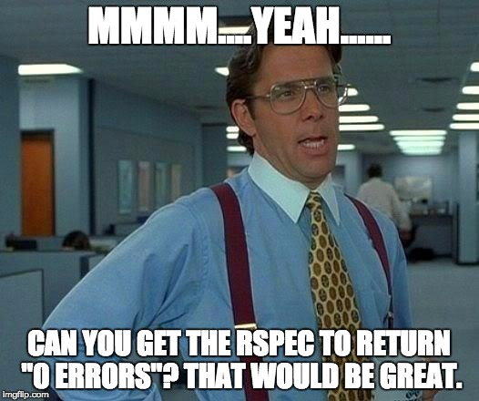

How many people here watch the "Walking Dead"? Based on the ratings, I assume there might be a few fans out there. I'm not a super-fan, but I enjoy watching a show about survivors in a post-apocalyptic world. As a result of this fascination, I also start imagining how I would interact with others in such a world. Well, the first instinctive answer that came to mind was:
I'm dead.
Now, hang on there. This is not a self-confidence issue! Instead, I began contemplating how my thinking style would translate into this apocalypse. I recalled the VARK one for instance and it stated that I was more auditory. Of course, listening for the un-dead is a super-important skill. However, it also stated that I tend to work abstractly which means I don't listen to lectures or steps usually. As a result, I learn from skimming, exploring, speed-reading and jumping all over the place. Unfortunately, a mind-set like that in the Walking Dead is bound to lead to death versus going through the steps. So, I imagine myself getting by until I someday decide to charge into a supply depot with too many unseen lurkers around. Well, at least I would hopefully go down in a blaze of glory!
Now let us escape back to the original topic! Phase 0 has been an interesting experience because I am trying a few new study mechanics that I normally don't employ. Given my "random" method of thinking, I decided to time my sessions to about 20-30 minutes at a time with breaks. I realized that my tendency to explore topics or skip around tends to waste time and brain power.Also, I was taxing my own brain as well. Plus, I always came back to the topic with a slightly different perspective or an "ah ha" moment that would not have existed during the initial session.
The Phase 0 modules tend to emphasize reading chapters from this dude named Pine. In general, Pine is a good read, but I also found it difficult to apply his approach to the assignments occasionally. Despite being a random thinker, I still tend to think of this material as "concrete" which means I need to plug in code similar to what Pine writes to get the same result. However, I was in for a rude awakening when I started struggling with adopting his code. I erroneously forgot to do something before this which was examine WHY I was piecing together the code in the first place. Instead of thinking "I need this factorial," I should be thinking "what do I need to get from my storehouse to make this program in the first place." The trick though is figuring out if you got the right tools to make the code. Luckily, I grew to enjoy running rspec over and over again to test out items.
My new plan is to write pseudocode as much as I can even if it is terrible pseudocode. If I write out an explanation to a problem as opposed to just laying out code, I can at least plan more efficiently each time before the task. Actually, the VARK style also highlighted my need to write things down and not focus on the lecture. Ah. There it is. Let's go with this approach! I will say that doing these exercises and failing those rspecs frequently are helping with that growing mindset that we are supposed to hone. Instead of shrinking down when I get a syntax error, I start reading the code jibber-jabber and adjusting/tweaking whatever I can. It's wonderful when sometimes returns 0 errors.
Thanks for reading! Stay alive!